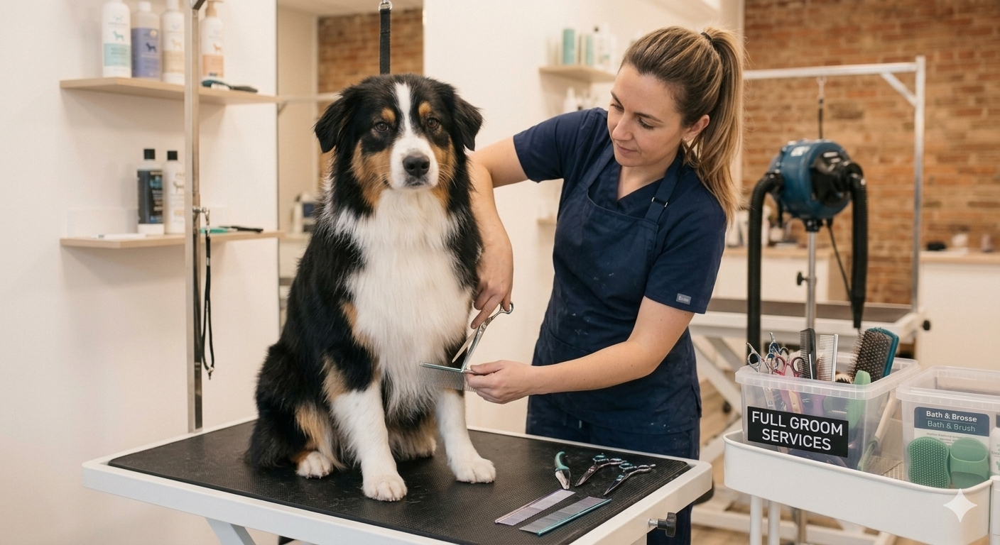
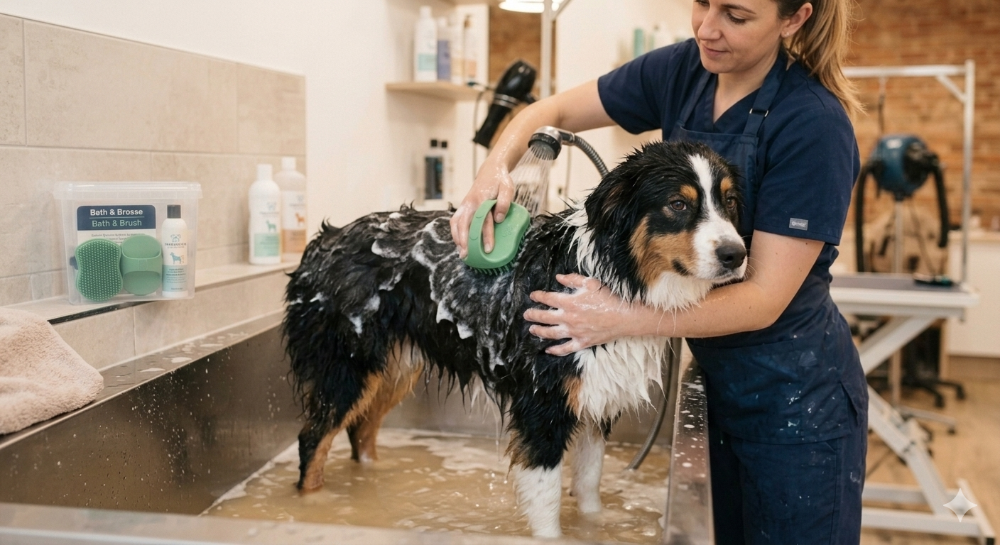
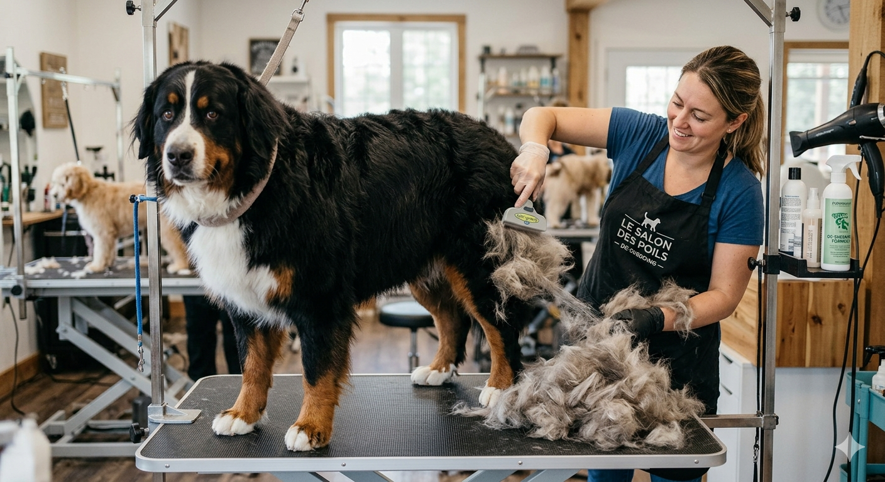

📍 Paris, France
Né d'une passion profonde pour le bien-être animal, Le Cocon 32 est un salon de toilettage moderne dédié à offrir une expérience douce, confortable et professionnelle aux chiens et chats. Notre espace a été imaginé comme un véritable cocon où chaque animal bénéficie d'une attention personnalisée, avec des techniques adaptées à son pelage, sa morphologie et son tempérament. Notre équipe utilise des équipements professionnels et des produits respectueux afin de garantir un moment agréable, sécurisé et relaxant pour vos compagnons à quatre pattes.

Une prestation complète pour redonner beauté et confort à votre animal. Le Full Groom comprend le bain avec des produits adaptés, le séchage professionnel, le brossage, la coupe ou la finition du pelage, le nettoyage des zones sensibles ainsi qu'une mise en beauté personnalisée selon la race et les préférences du propriétaire. Chaque séance est réalisée avec patience afin que votre compagnon profite d'un moment agréable.

Une formule idéale pour maintenir un pelage propre, brillant et en bonne santé. Cette prestation comprend un bain professionnel avec shampoing adapté, un séchage doux, un brossage complet et une vérification générale du pelage. Le Bath & Brush aide votre animal à rester propre entre deux toilettages complets tout en profitant d'un véritable moment de détente.

Une technique spécialisée pour réduire efficacement la perte de poils. Grâce à un brossage professionnel adapté au type de pelage, nous éliminons les poils morts en profondeur tout en préservant la santé de la peau. Cette prestation est particulièrement recommandée lors des périodes de mue afin d'améliorer le confort de votre animal et de garder votre intérieur plus propre.